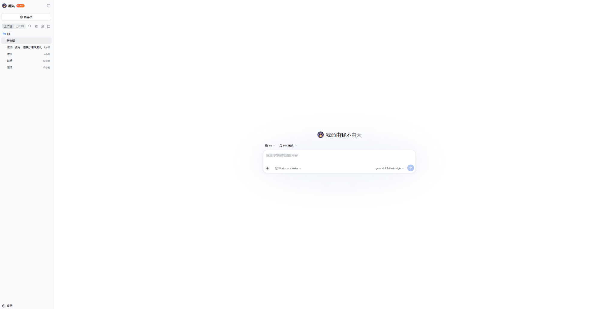
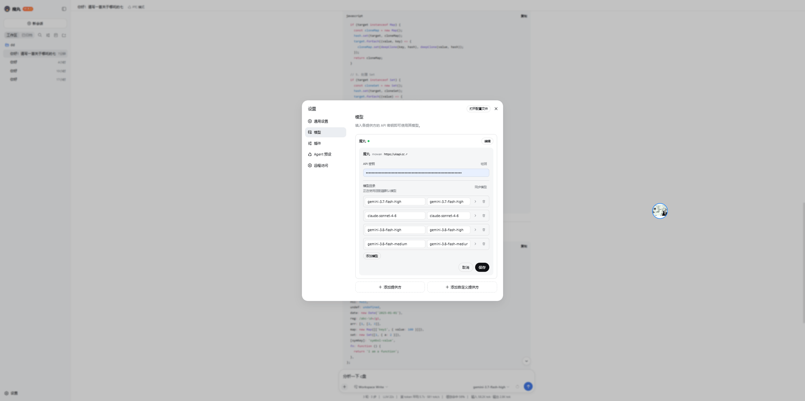
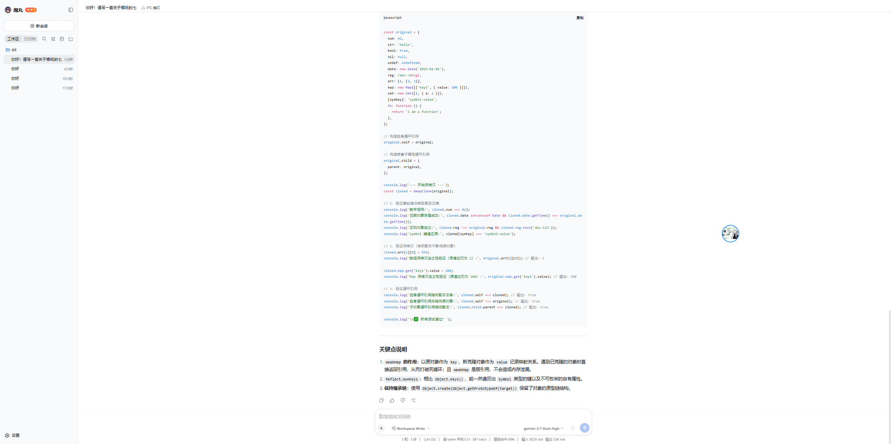
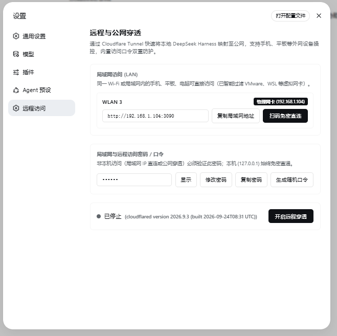
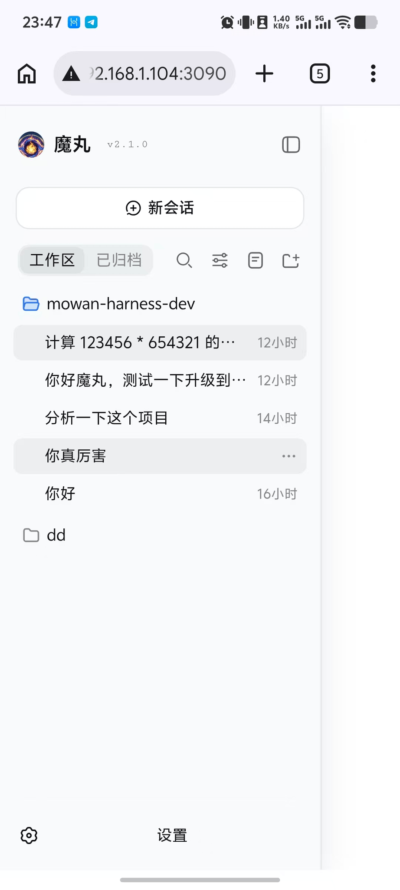
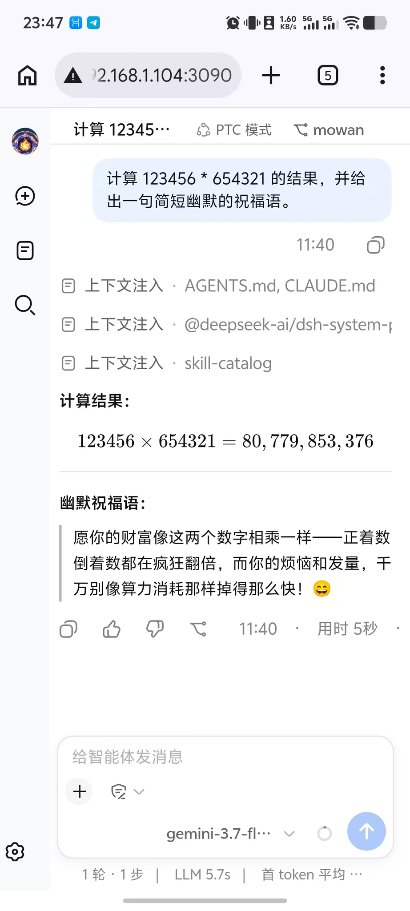
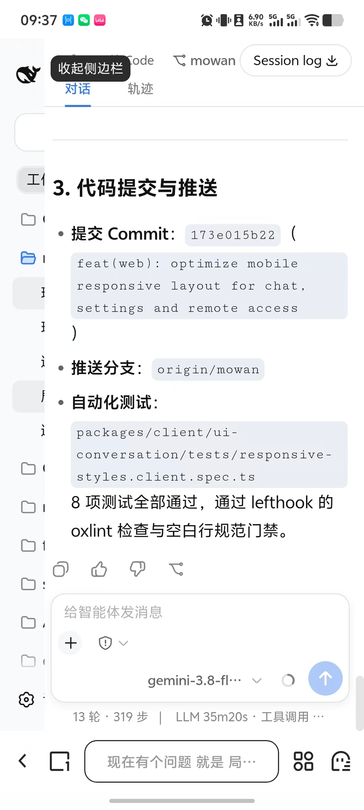
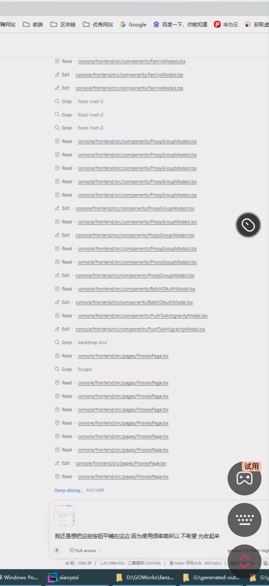

有些工具你得像供祖宗一样守在电脑前伺候，而魔丸只会让你体会什么叫真正的“老板级掌控”。
局域网扫码秒连 ·
免费内网穿透 ·
实测连续狂飙 400+ 分钟数千步绝不降智。
拒绝任何模型绑架。ChatGPT、Claude、Grok、DeepSeek、GLM、Kimi 原生即插即用；
更对 Gemini 顶尖大模型 实行底层级吞吐与上下文深度榨干，打造长任务算力天花板。
市面上许多 Agent 遇到百万级上下文就卡死崩溃，或者遇到长输出就格式错乱。魔丸对 Gemini 3.7 / 3.8 / 2.5 Pro & Flash 进行了指令集与上下文缓存（Context Caching）协议级深度调优，直接把长任务代码工程的性价比拉满！
“那些还在为一个 Prompt 模板、一个 API 格式转接折腾半宿的人，纯粹是在拿体力当高科技。
真正在后台狂飙 400 分钟、吞吐数百万 Token 的人，早就用 Gemini 几百万上下文一键吞下整个工程去睡大觉了。选不对工具和模型，你熬的每一个夜都是在为认知买单。”
完美兼容工业级 Function Call 工具调用规范与 Reasoning 深度思维推理。指令执行精准利落，绝不拖泥带水。
业界顶尖的代码美学与复杂架构重构能力。魔丸原生支持其长输出机制，多文件联调如同资深架构师亲临工位。
敏锐的逻辑推演与无束缚的反思批判能力。对于高难度系统级排障与反直觉 Bug，直击核心病灶，毫不含糊。
国产之光！数学与代码推理极致穿透力，搭配魔丸的本地 Ralph 循环，复杂自愈排错既便宜又生猛。
顶尖中文语义理解与函数调用生态。国内部署网络零抖动，为企业级中文场景提供坚如磐石的执行力。
长文本检索与超长文档阅读理解专家。巨型项目几十个依赖库与技术文档，一网打尽无缝对照，滴水不漏。
探索魔丸 (mowan-harness) 的强大能力：从一键极速接入到深度自主编程。
纯粹优雅的界面交互，开箱即用。原生支持本地工作区绑定（Workspace Write）、PTC 模式以及最新的高并发大模型（Gemini 3.7 / Claude 3.7 / 3.8 等），助您专注创作与开发。


只需在 Sub2API 密钥列表点击【导入到魔丸】，即可一键直达客户端设置面板。系统自动填入 API 密钥并完成端到端连通性检测，绿色「● 密钥有效」立即可用，无需手动复制。
具备真正的代码工程重构与多文件逻辑实现能力。每次运行均在底部实时汇报轮数、执行耗时、首字响应延迟、Token 吞吐速率（tok/s）以及上下文缓存命中率，让推理全过程透明可控。

不用懂反向代理，不用折腾端口映射，更不需要当半吊子网工。手机扫码免密秒开，单手指挥全链路执行。
电脑端一键启动，自动识别物理网卡，集成 Cloudflare 原生隧道。点击【扫码免密直连】即可弹出专属二维码：



手机连接同一 Wi-Fi，打开相机一扫即登。不需要输入密码，不需要反复验证，躺在床上秒进工作区。
内置原生免费隧道穿透。出门在外，在地铁上、咖啡厅、马桶上，掏出手机照样单手下发大工程。
告别反人类的缩小版桌面。大按钮、清爽会话树、丝滑流式响应，每一个像素都为你单手躺平而设计。
市面上普通 Agent 聊 10 轮就失忆，做个长任务不是胡言乱语就是中断摆烂。
魔丸专打硬仗：咬死目标、自动纠错、测试全绿、推完代码才收工！
哪怕在手机上下发指令，也能自主完成 319 步工具调用、连过 8 项测试、跑通 oxlint 门禁，直接推送 origin/mowan 分支！

真实工程级长任务：LLM 耗时 266 分钟，工具调用 232 分钟，累计 400 多分钟不间断自主搜索、编辑数十个文件，首尾目标 100% 吻合！

数据对比见分晓，专治各种对劣质工具的心存侥幸
| 对比指标 | 市面普通 Agent / 娇气玩具 | 魔丸 Agent（真实实测） |
|---|---|---|
| 持久续航 | 跑 15 分钟就上下文超限或卡死 | 连续执行 400+ 分钟（LLM 266m + 工具 232m） |
| 步数规模 | 30 步以内开始迷路循环报错 | 实测 49 轮、2094 步真实工具调度顺利收网 |
| 心智稳定性 | 越聊越笨、失忆、“作为AI我无法完成” | 咬死初始目标，越到后期逻辑越清醒严谨 |
| 交付闭环 | 只提供代码片段，让你自己手动改 | 改完跑测试、修门禁、直接自动 Commit & Push |
拒绝任何复杂配置。全程图解，无论你在家里的沙发上，还是在出差路上的高铁里，三步搞定。
魔丸自动过滤虚拟网卡，智能锁定本地物理 IP。需要外出时，点击【开启远程穿透】即享原生加密公网通道。
点击【扫码免密直连】弹出二维码。手机连接同一 Wi-Fi，用自带相机或浏览器扫码，免密自动通过验证直接进入工作区。
在手机上轻敲一句话：“把整套项目做响应式重构并跑通自动化测试”。手机息屏丢一边，魔丸自主干完全流程，推完代码直接看战报。
拿捏心态，降维打击，早点换掉你手头那个娇气的花瓶
“还在手动配端口、查反代、搞内网映射？不会吧不会吧？你的时间值钱，还是几块钱的电费值钱？有些事只要扫个码，别把自己感动坏了。”
“整天端坐在工位前盯着屏幕生怕它死机，不是因为你敬业，而是因为你用的 AI 太不可靠。敢让你放心睡大觉的，才叫底气。”
“别再替那些动不动就‘上下文超限’的玩具挽尊了。它不是在沉思，它就是单纯接不住几个小时的高强度长链路执行。”
“最高级的掌控感，从来不是死按着键盘，而是你人在被窝里，手机一震：‘49 轮长任务已自主结算，所有测试用例已通过。’——这，才叫当大爷。”
现在就扫码直连，体验什么叫“躺平收割”。
局域网即连即用 · 免费穿透不限速 · 实测连续几小时狂飙不降智